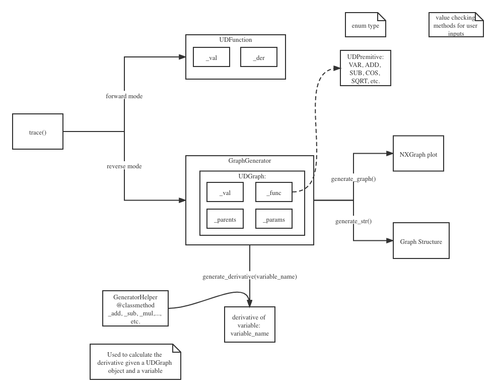

Implementation
Here, we describe the implementation details of Undefined on how we achieve the automatic differentiation.
5.1 Core Data Structure
{kind=link}
Here is the general workflow in our main function and how they connect with other .py files. The two main branches in the implementation are the “forward mode” and “reverse mode”. We will discuss in details below.
Another feature we have is to use the UDPremitive object, which is a enum type to calculate the
Forward Model
To calculate the derivative in forward mode, we used the dual number approach. In the `UDFunction` class inside the UDFunction.py, we overloaded the operators and accommodated the dual number (as the core data structure) approach following the formula below:
\({z}_j = {v}_j + D_p v_j \epsilon\)
where \({v}_j\) is the real part corresponding to the primal trace, and the \({D_p v_j}\) is the dual part corresponding to the tangent trace.
Reverse Model
In the reverse model, we implemented a tree structure (udgraph) to store the intermediate values.
5.2 Core Classes
We used numpy and math libraries to help with the math and used matplotlib and networkx libraries for plot the computational graph.
The methods and descriptions below are only included the major functions. Helper functions are not included. Please refer to the source code for all detailed function description.
API.py:
This class contains methods that can be called by the users. Such as trace().
Method |
Description |
|---|---|
trace(lambda_function, mode=’forward’) |
given a user defined function, calculate the derivative using auto differentiation. Default mode is forward. |
UDFunction.py:
This class wraps the core data structure in our library. Objects instantiated from this class are the most basic computing units in our library.
Name Attributes:
Name Attribute |
Description |
|---|---|
values |
values of a elementary function |
derivatives |
derivatives of a elementary function |
shape |
a tuple that declares the shape of values attribute |
Methods:
Calculator.py:
This class contains functions to perform elementary functions calculation on UDFunction such as sin, sqrt, log, exp, which cannot be implemented by overloaded functions in UDFunction.
Method |
Description |
|---|---|
cos(UDFunction) |
calculate cos value of a UDFunction |
sin(UDFunction) |
calculate sin value of a UDFunction |
tan(UDFunction) |
is calculated tan by using sin(UDFunction) and cos(UDFunction) |
sqrt(UDFunction) |
square root performed on UDFunction |
exp(UDFunction) |
exponential performed on UDFunction |
log(UDFunction, base=np.e) |
logarithms of base: base. Default base is np.e |
GraphGenerator.py:
Utils.py:
5.3 External Dependencies
We are planning to include one python file to include the codes for computing the derivative, and have another file with all the testing files. Both TravisCI and CodeCov will be used for testing suit monitoring. The CI status and the code coverage are reflected in our github repository. The package will be uploaded and distributed via PyPI . We will use the NetworkX package for constructing the visualization for the computational graph.